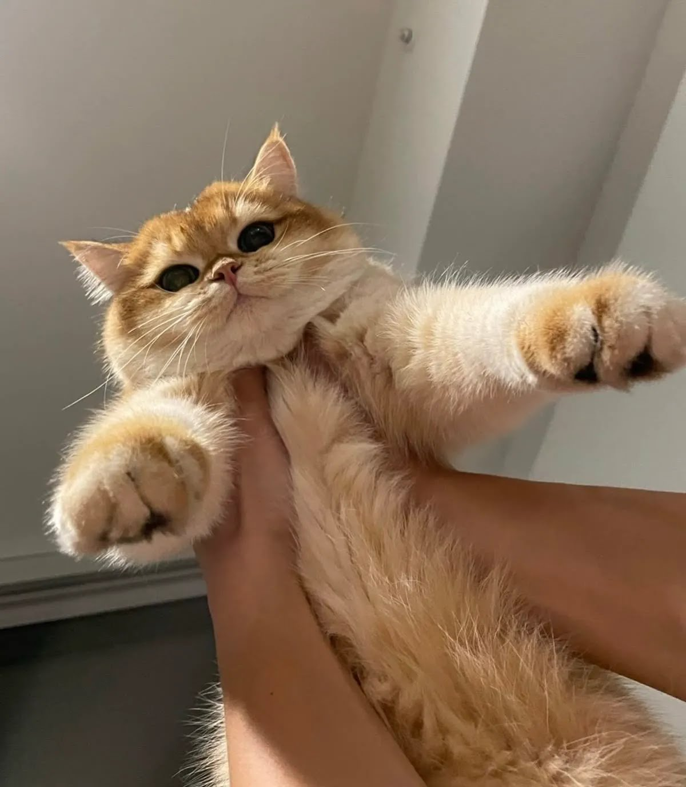
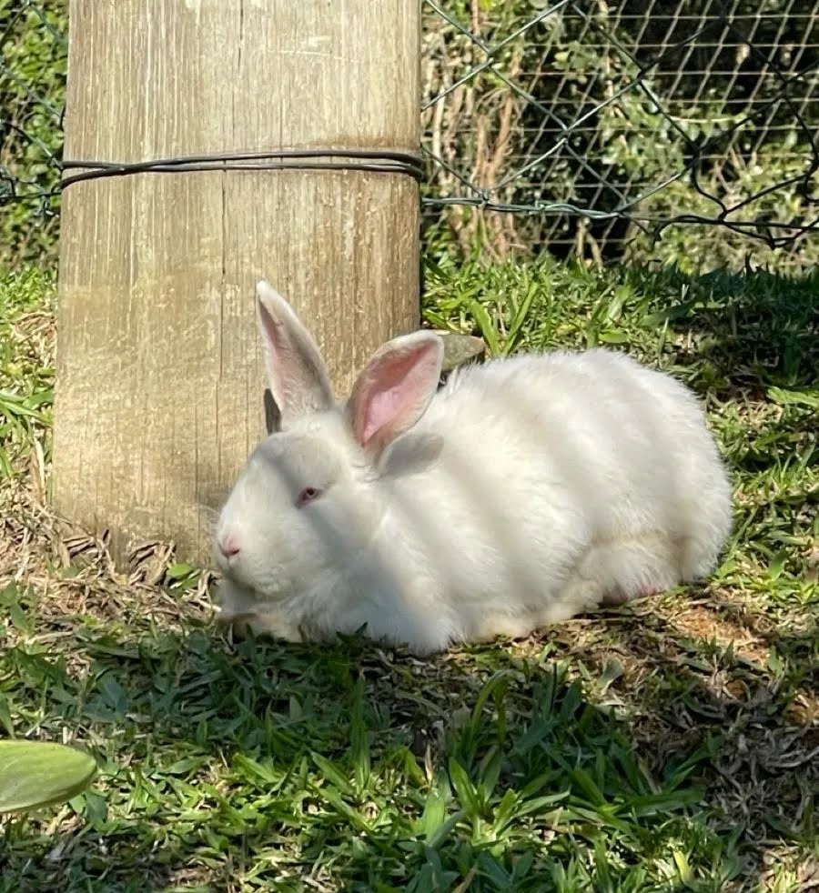
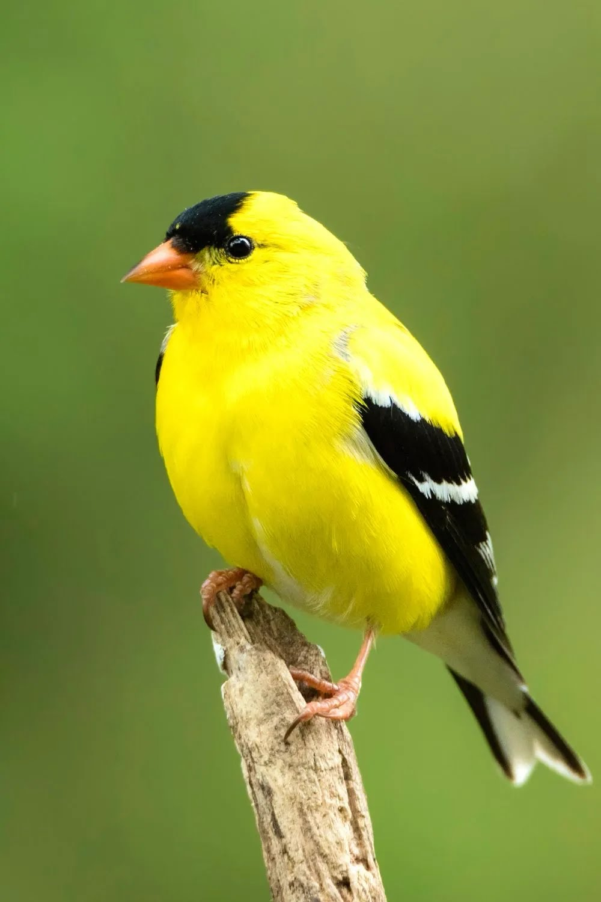

Buddy
Type: Dog
Breed: Golden Retriever
Age: 3 years
Gender: Male
Last seen: Quezon City
Missing Since: September 5, 2026
Call: 09XX-XXX-XXXX
Type: Dog
Breed: Golden Retriever
Age: 3 years
Gender: Male
Last seen: Quezon City
Missing Since: September 5, 2026
Call: 09XX-XXX-XXXX

Type: Cat
Breed: British Short Hair
Age: 6 Months
Gender: Female
Last seen: Makati City
Missing Since: September 9, 2026
Call: 09XX-XXX-XXXX

Type: Rabbit
Breed: New Zealand
Age: 1 Year
Gender: Female
Last seen: Cavite
Missing Since: September 1, 2026
Call: 09XX-XXX-XXXX

Type: Bird
Breed: American Goldfinch
Age: 4 Months
Gender: Male
Last seen: Pampanga
Missing Since: September 15, 2026
Call: 09XX-XXX-XXXX